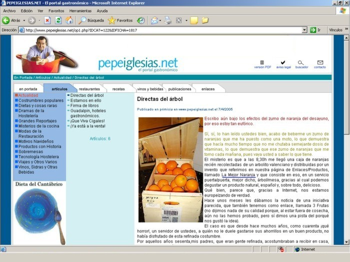

Escribo aún bajo los efectos del zumo de naranja del desayuno, por eso estoy tan eufórico.
Sí, sí, lo han leído ustedes bien, acabo de beberme un zumo de naranjas que me ha puesto como una moto, lo que demuestra que hacía mucho tiempo que no me chutaba semejante dosis de vitaminas, lo que demuestra que ese zumo de naranjas que me tomo cada mañana, pues vaya usted a saber lo que tiene.
El misterio es que a las 8,30h me llegó una caja de naranjas recién recolectadas de un arbolito valenciano y distribuidas por un invento que referimos en nuestra página de Enlaces/Productos, llamado La Mejor Naranja y que consiste en eso, en un servicio puerta/puerta, mejor dicho, árbol/mesa, gracias al cual podemos degustar un producto natural, español y, sobre todo, delicioso.
Qué bien, parece que, gracias a Internet, nos estamos europeizando de verdad.
Hace unos meses les dábamos la noticia de una iniciativa parecida, que también tenemos como enlace, llamada 3 Frutas (no dijimos nada de su calidad porque, al estar fuera de cosecha, aún no las hemos probado, pero sí dimos una pista del porqué nos gustó la idea).
El caso es que desde hace muchos años, como cuarenta ¡qué horror!, un servidor de ustedes, a quién no le duele gastarse sus ahorrillos en un buen producto, no había disfrutado de esta refinada costumbre.
Por aquellos años sesenta,mis padres, que eran gente refinada, acostumbraban a recibir en casa, cajas de fruta recién recolectada, sacos de patatas gallegas, barrilitos de olivas sevillanas, tarros de miel de la Alcarria, etc.
Poco a poco la gastronomía se fue socializando y ya no era necesario aquel trajín, porque ya había de todo en el súper.
Hoy hay mucho más, incluso frutas exóticas como chayotes, papayas, mangos y hasta chicozapotes, pero lo que no hay son tomates que sepan a tomate, peras que sepan a pera, ni naranjas que sepan a naranja.
Hace catorce años, cuando trabajaba en el diario El Progreso de Lugo, publiqué un reportaje sobre una forma de compra que me pareció deliciosa, las tiendas en huerto, según la cual, el propio consumidor iba al campo de cultivo y recogía él mismo los tomates, calabacines, zanahorias, peras y manzanas, que pagaría en una caja a la salida. Divertido ¿verdad?, bueno, pues no se pueden imaginar el exitazo que tuvo y eso que se trataba de Inglaterra, donde ni el clima, ni el nivel gastronómico, son precisamente los mas indicados para semejante invento.
¿Es caro? Pues lo era, pero ya no lo es.
Un servidor de ustedes, que de no haber un motivo grave, no se hubiera tomado la molestia de escribir este largo artículo solo para decir lo ricas que están las naranjas valencianas de lamejornaranja.com, se ha puesto las pilas y vuelve a envenenar su pluma para dar darles cuenta de una trágica realidad. El asunto es que ya está bien de contemplar a los sinvergüenzas de los políticos, tanto a los del gobierno como a los de la oposición (parece que están enfrentados pero, entre bambalinas, hacen baca y se reparten los beneficios), rasgándose las vestiduras porque no ha habido suficientes comisiones de investigación para demostrar si hubo o no manifestaciones organizadas el 14M, o porque los vascos quieren tener otro partido nacionalista, cuando en realidad lo que están es encubriendo que el costo de la vida se ha encarecido mas de un 100% en los últimos tres años y no ese supuesto 3% de inflación que nos cuentan. Eso sí que es un tema de Estado, que un trabajador haya visto duplicarse el costo de su cesta de la compra, mientras que sus salarios se mantienen prácticamente fijos. Eso sí que es para hacer manifestaciones. Eso sí que es justificante para armar una muy gorda.
Y para colmo, los jetas de los telediarios, pretenden que nos traguemos la milonga de que la culpa de que las judías verdes cuesten a 7€/Kg (1.162 pesetas, porque parece que en euros es menos, pero más de mil pelas el kilo de putas judías verdes, manda Huebos), la tienen las heladas, cuando lo cierto es que se están pagando al agricultor a menos de 1€.
Esto es una vergüenza, nauseabundo, motivo de una revolución, porque con el precio de las angulas, el gobierno puede encogerse de hombros, el que no pueda pagarlas a 1.000€/Kg, pues que se joda y coma garbanzos, pero las patatas, cebollas, tomates, calabacines, etc., son bienes de primera necesidad y para eso están las instituciones, para regular el mercado, no solo para dar subvenciones con contenido electoral.
Así pues, creo justo apoyar estas iniciativas del Árbol a la Mesa. Ojala pronto pueda darles nuevas direcciones para hacer de la compra de La Huerta a la Mesa.
Hasta puede ser un original y sofisticado regalo, como se acostumbra hacer desde hace más de mil años en los protocolos diplomáticos mandarines y pekineses. De hecho acabo de decidir que le voy a regalar una caja a mi editora … que es mi mujer ¡Je, je, je!
Fuente: PepeIglesias.net